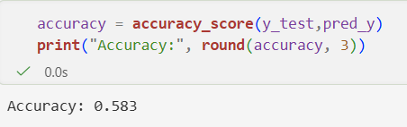
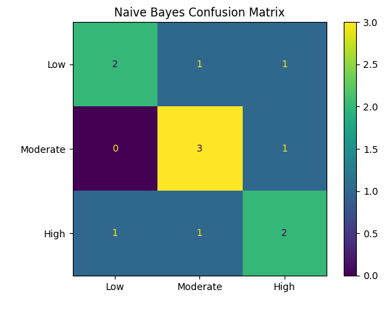

National Park Crowding Analysis
Naive Bayes
Naive Bayes is a supervised classification algorithm that uses Bayes’ theorem with an assumption of naivety to split up data observations into predefined categories. Using Bayes’ theorem, the model calculates the probability that an observation should go in each category based on its properties. Naive Bayes is “naive” because it assumes that all the features are independent of each other within each class. Multinomial Naive Bayes is used for nonnegative numeric, frequency, or count data. Bernoulli Naive Bayes is for binary variables, so each data observation would be 0 or 1. For my project, I will use Multinomial Naive Bayes to classify national parks into ‘Low’,’Medium’, and ‘High’ visitation levels. The feature types used to classify the national parks are: camping, recreation, activities, entrance fees, and region characteristics.

Data Preparation
The dataset was aggregated by park name with one row representing each national park. To create labeled data for supervised learning parks were classified into Low, Medium, and High visitation categories using Recreation Visits. Because these labels were derived from visitation data, Recreation Visits and Recreation Hours were excluded from the predictor variables to prevent data leakage. The model used recreation, lodging, camping, overnight stay, activity, and entrance fee characteristics to predict visitation level.
The data was split into training and testing sets using an 80/20 split with train_test_split. First, the features were split from their labels and “Crowding Levels” was created by grouping recreation visits into Low, Medium, and High categories. I used stratification so each class is represented in both datasets. The model was trained on the training set and then evaluated on the testing set. This was done to verify the results reflect how good the model performs on new and unseen data.


The training and test data are disjoint because this makes sure that the model will work on unseen data. If they were not disjoint, the model would not work on new data and potentially be biased
Results
To see how well the Naive Bayes training model did, a confusion matrix plot was made and an accuracy score was pulled.


For the Naive Bayes analysis results, the supervised classification system could classify national parks into different levels of visitation: 'Low' visitation, 'Medium' visitation, and 'High' visitation better than random guessing. From the report above, the accuracy level is 0.583 or 58.3%. Since random guessing would have had accuracy of 33%, the model performed better than chance. The first row shows that 2 'Low' visitation parks were correctly predicted as 'Low', 1 'Low' visitation park was incorrectly predicted as 'Medium', and 1 'Low' visitation park was incorrectly predicted as 'High'. The second row shows that 3 'Medium' visitation parks were correctly classified as 'Medium', 1 'Medium' visitation park was wrongly classified as 'High', and none were classified as 'Low'. The last row shows that 2 'High' visitation parks were correctly identified, 1 was wrongly classified as 'Low', and 1 was wrongly classified as 'Medium'.
Conclusion
From this analysis, it showed that national park visitation levels can be partially predicted using park activity and certain features such as camping, lodging, and recreational activity data. The model was able to differentiate between Low, Medium, and High visitation levels better than random guessing. This suggests that there are meaningful patterns in how different types of park utilization relates to overall crowding. However, the 58.3% accuracy also shows that these patterns are not perfectly separable and there is still overlap between visitation levels that the model does not entirely capture.